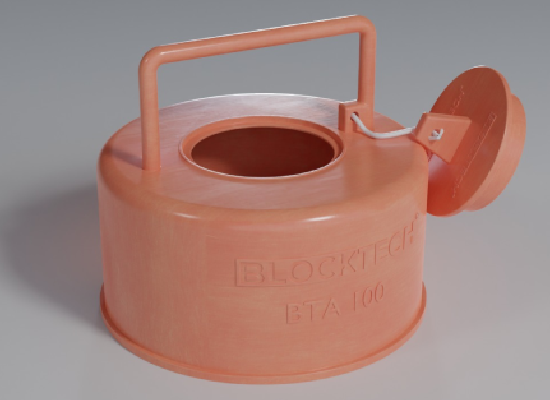
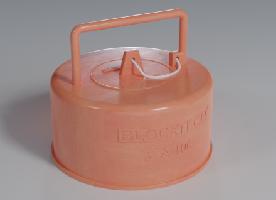
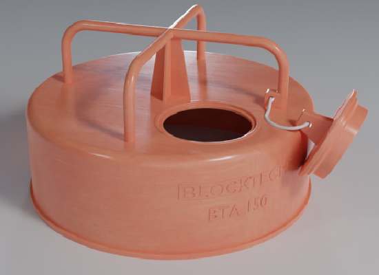
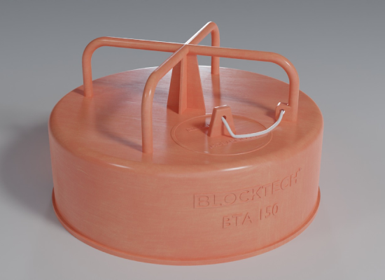

<section class="bg-one btaseries section">
  <div class="col-12">
    <div class="title wow fadeIn" data-wow-duration="1500ms">
      <h2>BTA<span class="color">Series</span></h2>
      <div class="border"></div>
    </div>

    <div class="row wow fadeInUp" data-wow-duration="500ms">
      <div class="img-prod col-4">
        <ngb-carousel>
          <ng-template ngbSlide>
            <div class="picsum-img-wrapper">
              
            </div>
          </ng-template>
          <ng-template ngbSlide>
            <div class="picsum-img-wrapper">
              
            </div>
          </ng-template>
          <ng-template ngbSlide>
            <div class="picsum-img-wrapper">
              
            </div>
          </ng-template>
          <ng-template ngbSlide>
            <div class="picsum-img-wrapper">
              
            </div>
          </ng-template>
        </ngb-carousel>
      </div>

      <div class="col-8 desc-prod">
        <p>A linha de produtos BTA apresenta 2 tipos de bloqueadores temporários universais que são utilizados para
          eliminar 100% os entupimentos ocasionado por concreto, cimeto, argamassa, gesso, rejunte, detritos de obra no
          geral que possam cair acidentalmente nos pontos dos vasos sanitários, dos ralos da cozinha, dos ralos dos
          banheiros e dos ralos dos chuveiros gerando a obstrução de uma determinada parte da prumada de esgoto.</p>

        <p>Tamanhos disponíveis:</p>
        <div class="closed"><fa-icon [icon]="check" class="icon-check"></fa-icon>BTA-100 - Produto utilizado para eliminar o entupimento dos pontos de esgoto com diâmetro
            de 100mm dos ralos e vasos sanitários.</div>
            <div class="closed"><fa-icon [icon]="check" class="icon-check"></fa-icon>BTA-150 - Produto utilizado para eliminar o entupimento dos pontos de esgoto com diâmetro
            de 150mm dos ralos sifonados.</div>
      </div>
    </div>

    <div class="details row wow fadeInUp" data-wow-duration="500ms">
      <ul ngbNav #nav="ngbNav" class="nav-tabs">
        <li [ngbNavItem]="0">
          <button ngbNavLink>ESPECIFICAÇÃO</button>
          <ng-template ngbNavContent>
            <p>BTA-100</p>

            <p>O Bloqueador temporário universal apresenta uma alça para o rompimento manual da parte circular superior.
            </p>

            <p>O produto apresenta um orifício de 40mm que é aberto quando necessário realizar o escoamento da água do
              teste hidrostático e fechado logo após pelo tamponador de 40mm.</p>

            <p>O material apresenta um dispositivo que liga o tamponador de 40mm ao bloqueador temporário universal de
              100mm.</p>

            <hr>

            <p>BTA-150</p>

            <p>O Bloqueador temporário universal apresenta duas alças para facilitar aind mais o rompimento manual da
              parte circular superior.</p>

            <p>O produto apresenta um orifício de 40mm que é aberto quando necessário para o escoamento da água do teste
              hidrostático e fechado logo após pelo tamponador de 40mm.</p>

            <p>O material apresenta um dispositivo que liga o tamponador de 40mm ao bloqueador temporário universal de
              150mm.</p>
          </ng-template>
        </li>
        <li [ngbNavItem]="1">
          <button ngbNavLink>INSTALAÇÃO</button>
          <ng-template ngbNavContent>
            <p>
              O bloqueador temporário UNIVERSAL pode ser utilizado nas empresas que trabalham com luva de esgoto
              simples, luva de esgoto com fixação como passantes de laje e nas instalações clássicas que trabalham com
              caixa de madeira, espuma como passagem na laje ou até mesmo com as construtoras que realizam a perfuração
              em concreto, ou seja, o produto pode ser instalado em TODAS as metodologias da construção civil.
            </p>
          </ng-template>
        </li>
      </ul>
      <div [ngbNavOutlet]="nav" class="mt-2"></div>
    </div>
  </div>
</section>
